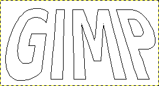
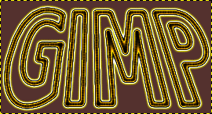

|

|
 |
| 4.5. Contornando um vetor |

|
4.7. Vetores e arquivos SVG |
Figura 7.14. Texto convertido em um Vetor

Texto convertido em um vetor e então transformado usando a ferramenta de Perspectiva

O vetor mostrado acima, contornado com um pincel enevoado, e então mapeado para um degradê usando-se o filtro “Mapear com degradê” usando o degradê “Yellow Contrast” (“contraste amarelo”, que vem junto com o GIMP)
A text item created using the Text tool can be transformed into a path using the Text to Path command in the context menu of the Text tool. This can be useful for several purposes, including:
Contornar o vetor, o que lhe dá muitas possibilidades de um texto com efeitos sofisticados.
E mais importante, transformar o texto. Converter o texto para um vetor, transformar o vetor, e finalmente, ou contornar o vetor, ou transforma-lo numa seleção e preenche-la, com frequência dá resultados de qualidade muito melhor do que transformar direto a camada de texto, tratando seus dados como pixels.
You can also wrap text along an existing path using the Text along Path command.